HISTORICAL LIMA
Ancient Lima Experience (Huacas of Lima)
Did you know that the city of Lima has more than 400 archaeological sites? Discover Lima as an ancient city through archaeology, urban landscapes, and living history.
Discover this ancient and beautiful city, its traditions, living culture, and everyday life. Understand what shapes the Peruvian people, and through them, gain new insight into Hispanic America. Urban culture, history, nature, and human connection through alternative experiences in Peru.
Did you know that the city of Lima has more than 400 archaeological sites? Discover Lima as an ancient city through archaeology, urban landscapes, and living history.
Peruvian cuisine is famous for combining diverse culinary traditions with some of the most delicious ingredients. Taste traditional Lima through local markets, cultural storytelling, and cooking with a local host.
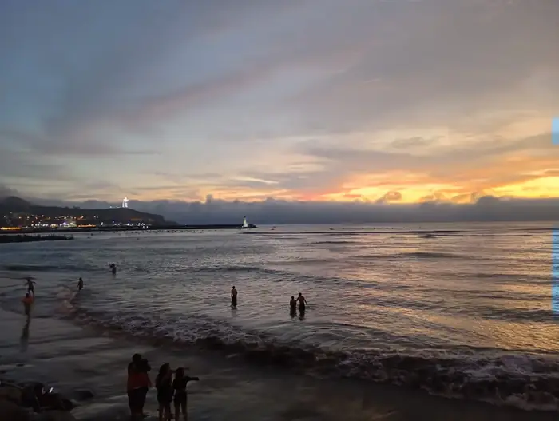
Did you know that Lima's coastline beaches are mostly man-made? The Peruvian Sea has played a major role in Peruvian history. Explore Lima Bay and discover a hidden side of the city.
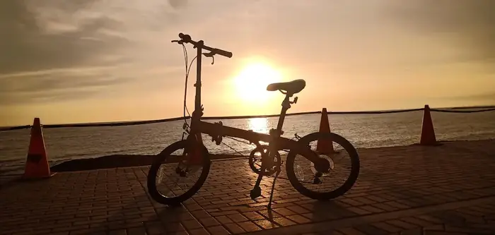
Lima is a huge, chaotic, and traffic-dense city. Despite appearances, it is also an excellent place for a bike ride — a perfect way to experience the city up close. Choose between two routes: the coastal esplanade or the historic downtown.
It lives in the people who make this city today — vendors, artists, musicians still at work. These routes mix ancient sites with the culture happening right now.
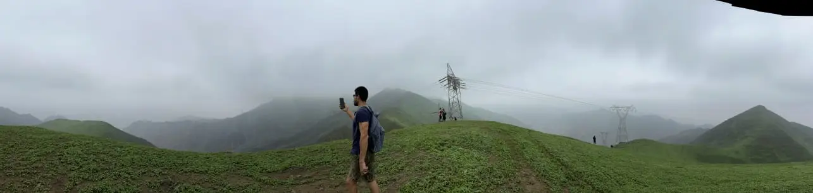
⚠ Only available June to August
The Peruvian coast is home to one of the most productive marine ecosystems in the world. Discover Lima's coastline through cliffs, ocean views, and hidden natural landscapes.
Lima is still Peru's main port city, which explains the enormous trade markets hidden from most foreign visitors. Visit one of Peru's major commercial hubs and learn about its living history.
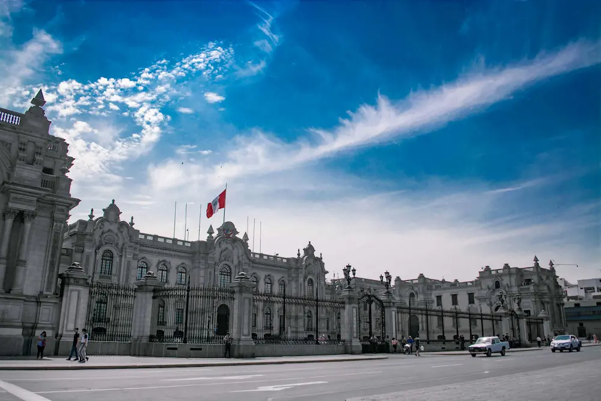
Do you have an idea, a place you want to explore, or a unique experience you would like to live? In a safe environment and with good company, let's make it happen.
Private experiences built around the city I actually know — not the postcard version.
Contact via WhatsApp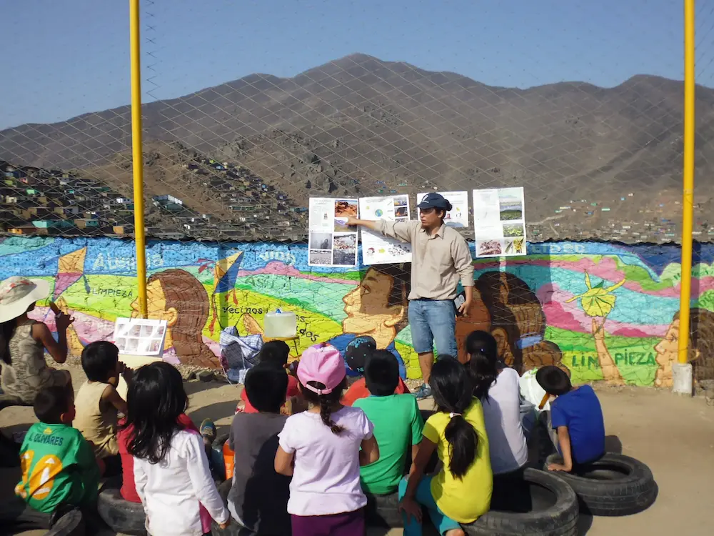
I'm a biologist who has spent years studying Lima's ecosystems, coastline, and urban landscapes. I've worked as a specialist guide for documentary filmmakers, naturalists, and scientists — and led environmental education workshops in the hillside communities most visitors never see. Before that, I was deep in Lima's underground culture — graffiti, skateboarding, music, and the political movements that shaped this city from the inside out.
Beneath its modern surface lie over fifteen hundred years of continuous human settlement.
Lima is the main gateway to Peru, and for a long time it was underrated. Beneath its modern surface lie over fifteen hundred years of continuous human settlement — shaped by the sea, the desert, and waves of cultures that left their mark on everything from the food to the street art.
Extremo Oeste is my way of sharing that Lima with travelers who want more than the postcard.
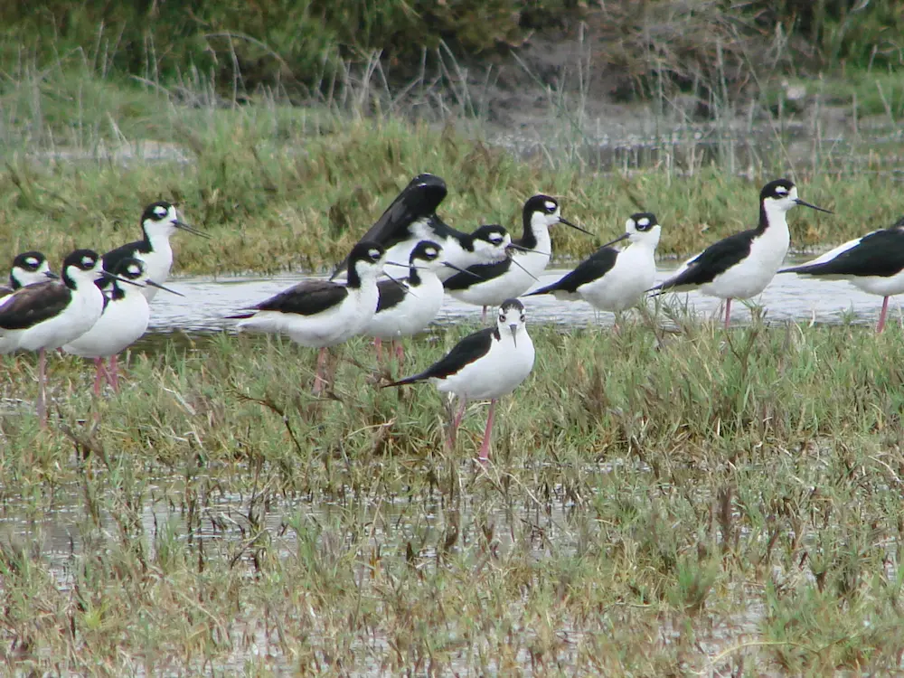
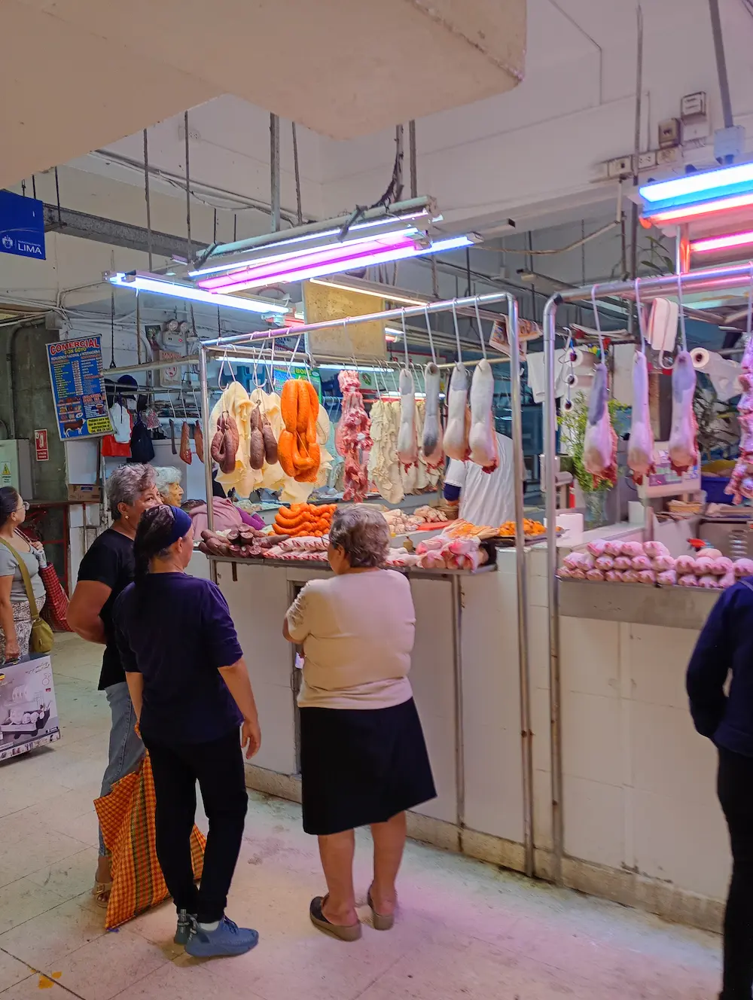
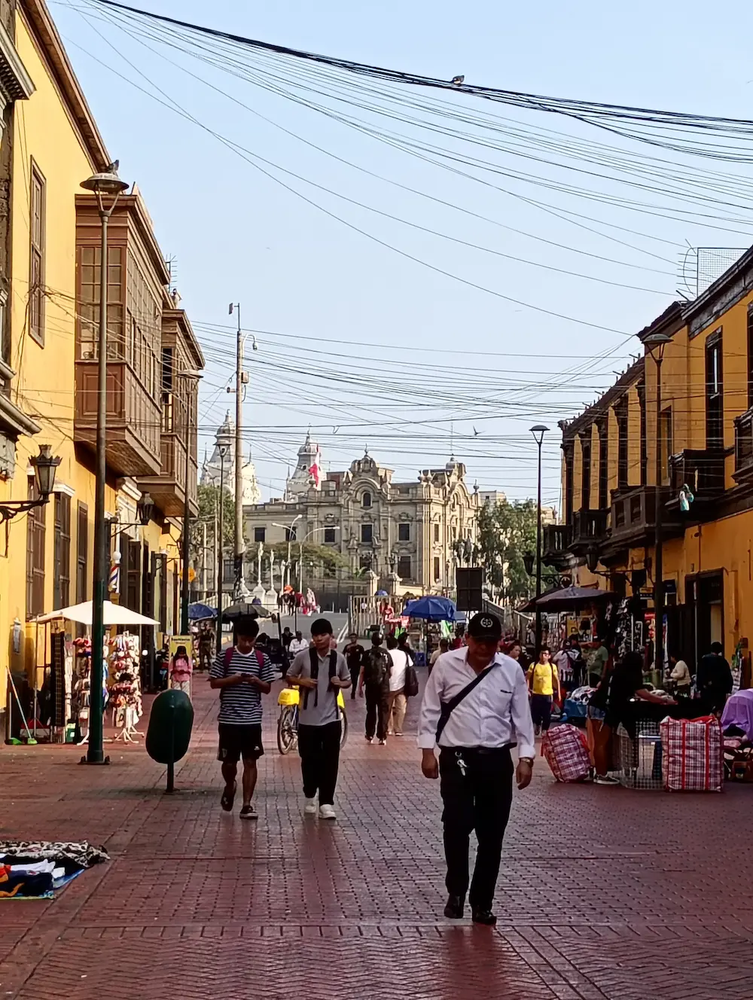
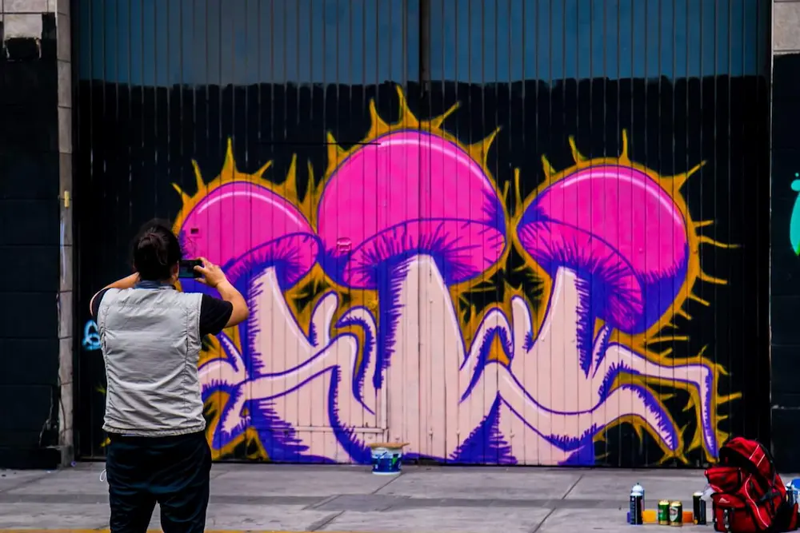
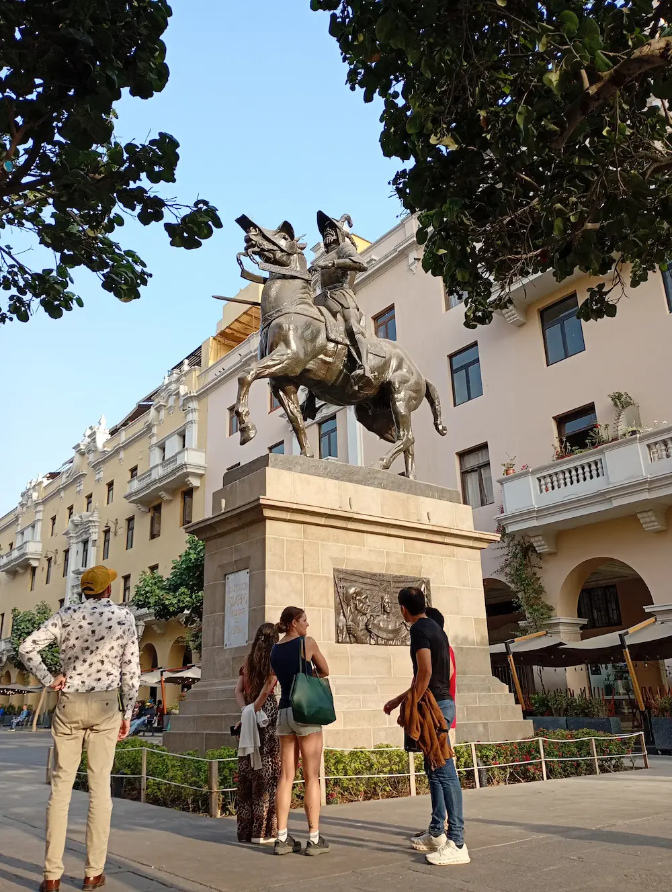
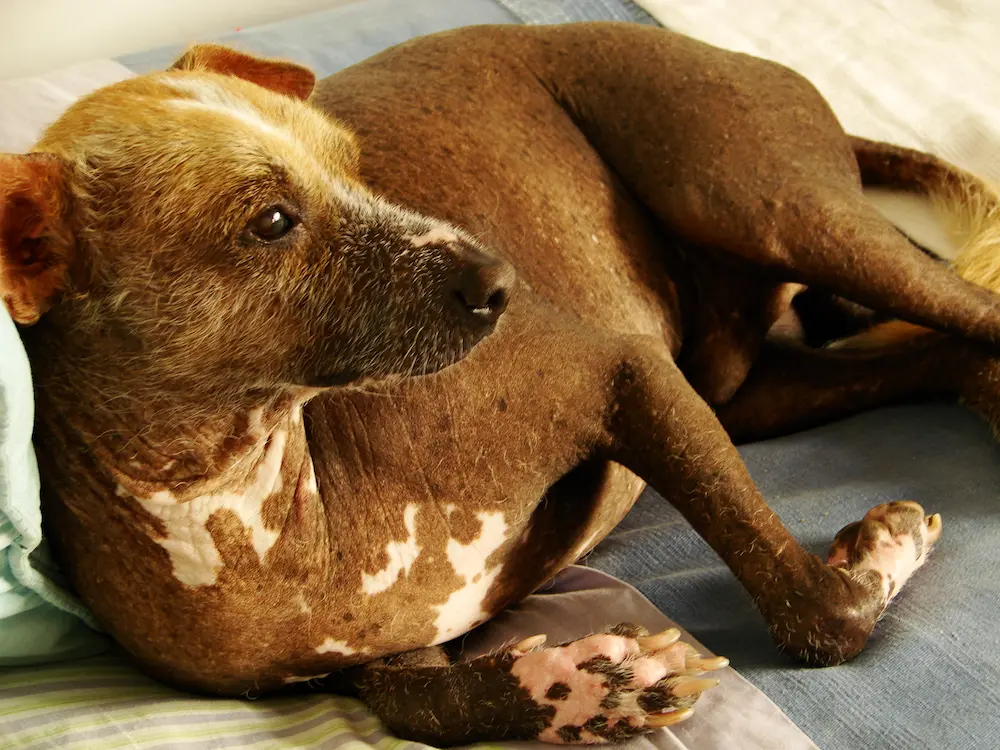
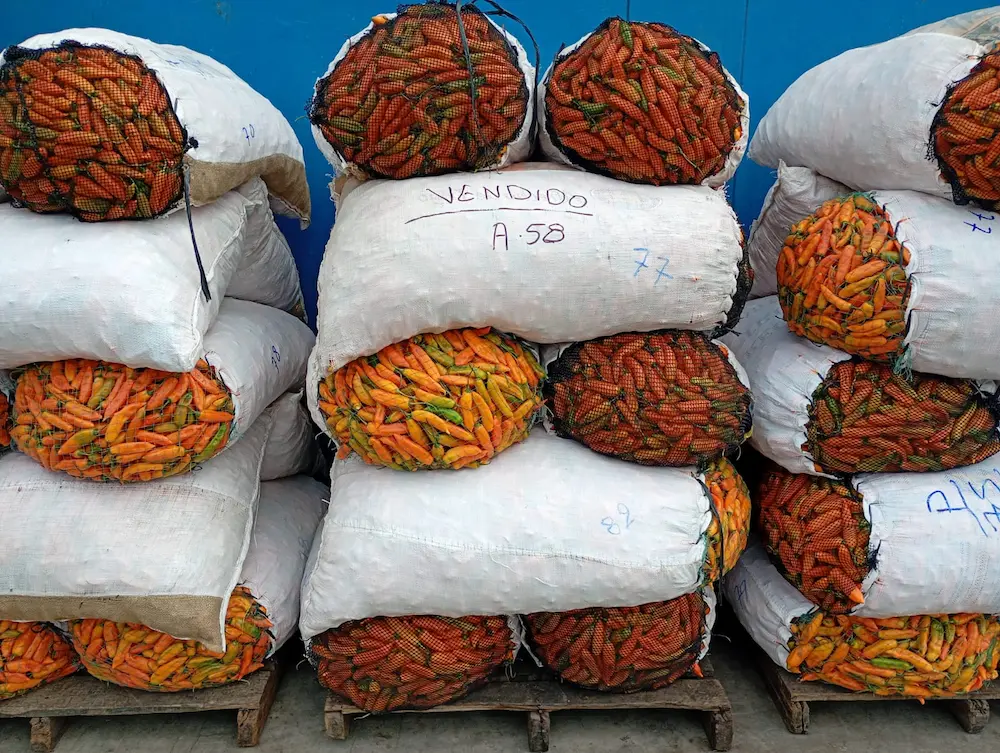
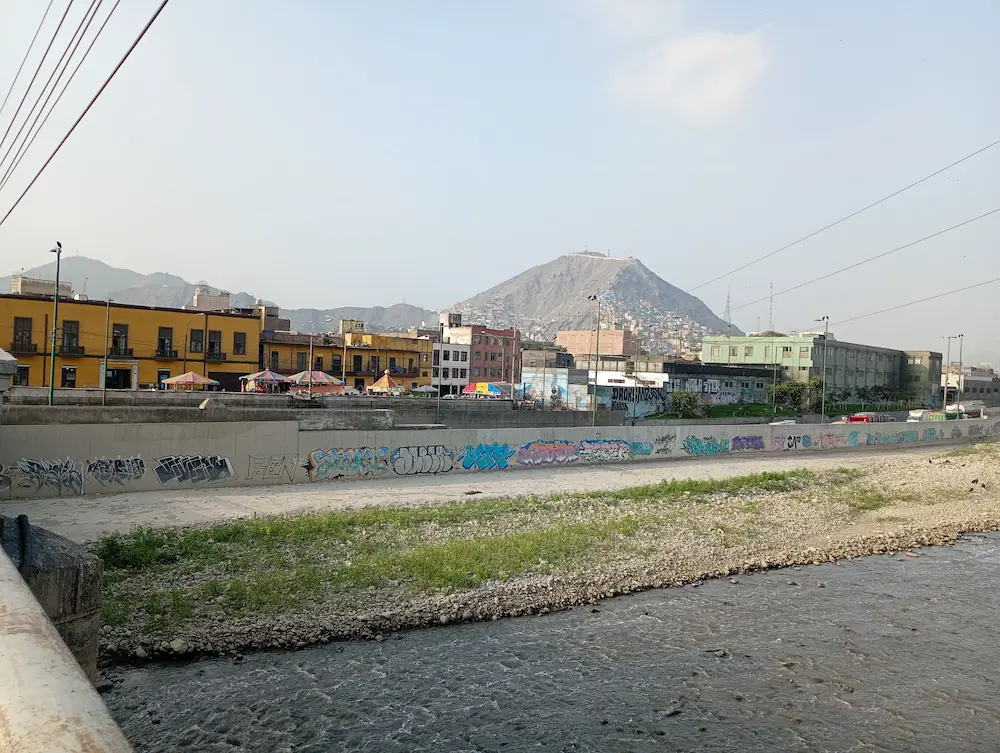
Contact us to book private experiences and discover Lima from a different perspective.
📞 +51 999 156 493
📧 contact.extremo.oeste@gmail.com